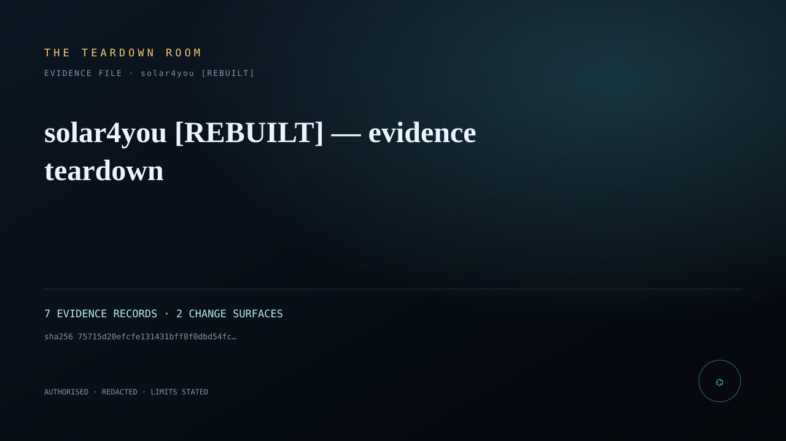
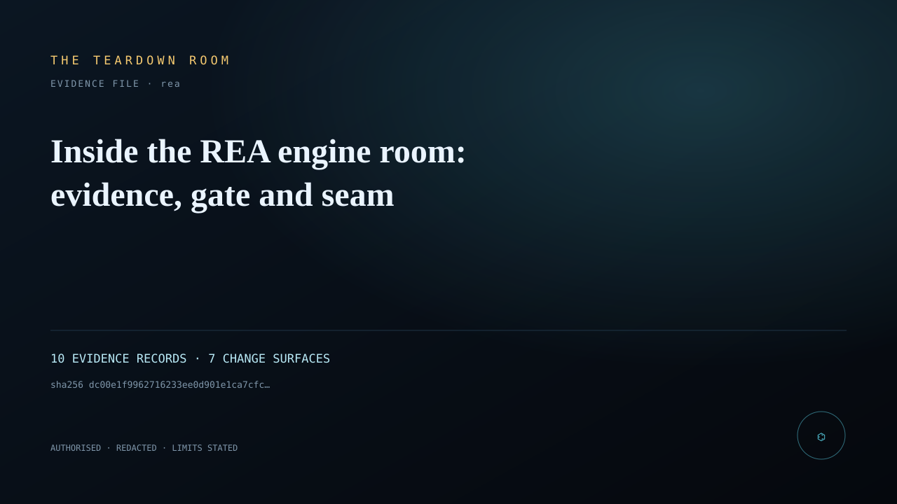

Local source tree
solar4you [REBUILT] — evidence teardown
2 change surface(s) mapped across 2 access mode(s): Source, Protocol.
Read the evidence file Open the fact filesThis is the shelf, not a feed. Each file is generated from a completed, authorised dossier. The counts below are the recorded counts, not an estimate.

2 change surface(s) mapped across 2 access mode(s): Source, Protocol.
Read the evidence file Open the fact files
7 change surface(s) mapped across 3 access mode(s): Source, Configuration, Protocol.
Read the evidence file Open the fact filesA plain-language path through the strongest production findings: scope, evidence, seam, proof and limit.
One stable page for each selected finding and change surface, with a verification path and the limit.
The full record, including test-only observations, duplicates, empty probes and errors. It is the audit trail.
A short captioned explainer generated from the dossier, plus the longer paper edit with timings, shot directions and the evidence IDs to show.
A share card and a SHA-256 digest of the dossier. The hash is the receipt that the page came from a specific record.
What was not tested, what returned nothing and what question comes next. A block is a finding, not a challenge.
Search titles and descriptions across the evidence library, fact files, guides and method.